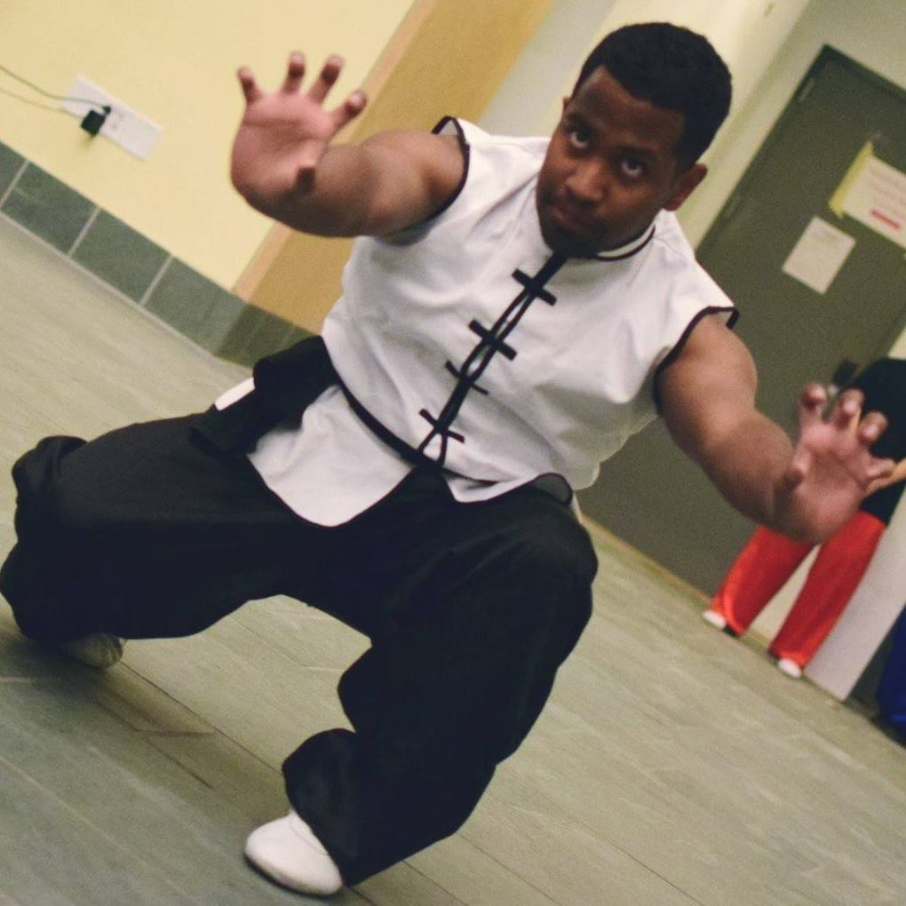

 Hey there! My name's Andrew! I am a recent graduate of Cornell University, and my passions
revolve around learning and practicing web/software development, building things (anything really), and
the not-so-well known sport of Wushu. It's a pretty safe bet that if I ever do have free time that isn't
sucked up by YouTube videos and the occasional video/board game, I will mostl likely be doing something
related to one of those three things.
A lot of those passions were discovered during my time on the slope. I had actually never written code,
nor heard of Wushu, prior to going to college. However, it really is an amazing time for some firsts.
Within my first two years I had picked up web development skills that landed me two of my first three
jobs ever. I was mostly looking for a place to practice my skills, happened upon an
institute that needed some help and was willing to take a risk on
a mostly unproven college student, and the rest was history. I worked there until my graduation. I also
TA-ed a data-driven web course in my senior year. However, I was still hungry to learn more. Every shiny,
new thing I saw on a webpage encouraged me to dig deeper and try to pick up new technologies that would
allow me to replicate those same things that caught my eye. I'm definitely still learning more as of today.
 I suppose I should talk about my love for building next. It's really been something that's followed me my
entire life. From building a pea shooter out of a copper pipe and a glove finger, to a lacrosse ball
catapult built out of a bucket, PVC pipes, a lacrosse stick, and counterweights, the willingness to make
something, mostly to prove to myself that I could do it, has followed me for a long time. Building really
is a hobby without borders. You can build (compose) music. I've tried my hand at that, and my test listeners
will attest that it's not my strongest point, haha. You can build visual effects, something I do devote a lot
of time to. I do believe that the ability to capture someone's attention solely through the quality and uniqueness
of video and effects is a rare talent worth pursuing and honing. I do enjoy going on the occasional creative
binge, just seeing if I can make what I see in my mind a reality. (Note: I am stubborn. It takes a lot for me
to admit when I'm beat.)
I suppose I should talk about my love for building next. It's really been something that's followed me my
entire life. From building a pea shooter out of a copper pipe and a glove finger, to a lacrosse ball
catapult built out of a bucket, PVC pipes, a lacrosse stick, and counterweights, the willingness to make
something, mostly to prove to myself that I could do it, has followed me for a long time. Building really
is a hobby without borders. You can build (compose) music. I've tried my hand at that, and my test listeners
will attest that it's not my strongest point, haha. You can build visual effects, something I do devote a lot
of time to. I do believe that the ability to capture someone's attention solely through the quality and uniqueness
of video and effects is a rare talent worth pursuing and honing. I do enjoy going on the occasional creative
binge, just seeing if I can make what I see in my mind a reality. (Note: I am stubborn. It takes a lot for me
to admit when I'm beat.)
Lastly, there's my love of Wushu. I suppose it encompasses some of the concepts I spoke about earlier.
It's definitely a sport that never stops teaching, so I'll never stop learning. "What made my last move
so crisp/sloppy?" "How does a slightly longer windup affect my jump height and rotation?" The more of these
questions I answer, the more I find I will have to learn to ever be as good as I want to be. Visually, the
sport is nothing short of stunning. To see all the individual flairs accenting the years of training by
professionals is a feast for the eyes, regardless of your familiarity with what you're watching. Lastly,
Wushu does give me the chance to build. My body. My mental endurance. My own form. And friendships that
I hope will last a lifetime.